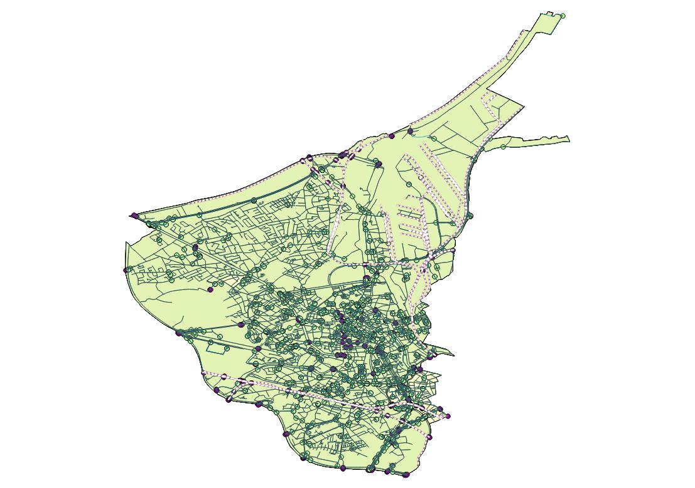
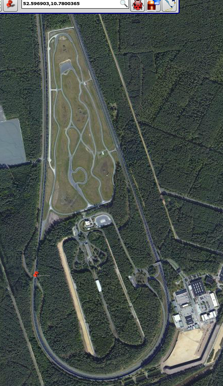
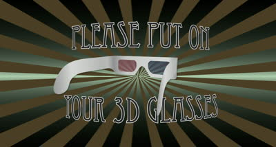
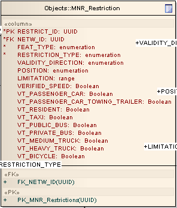
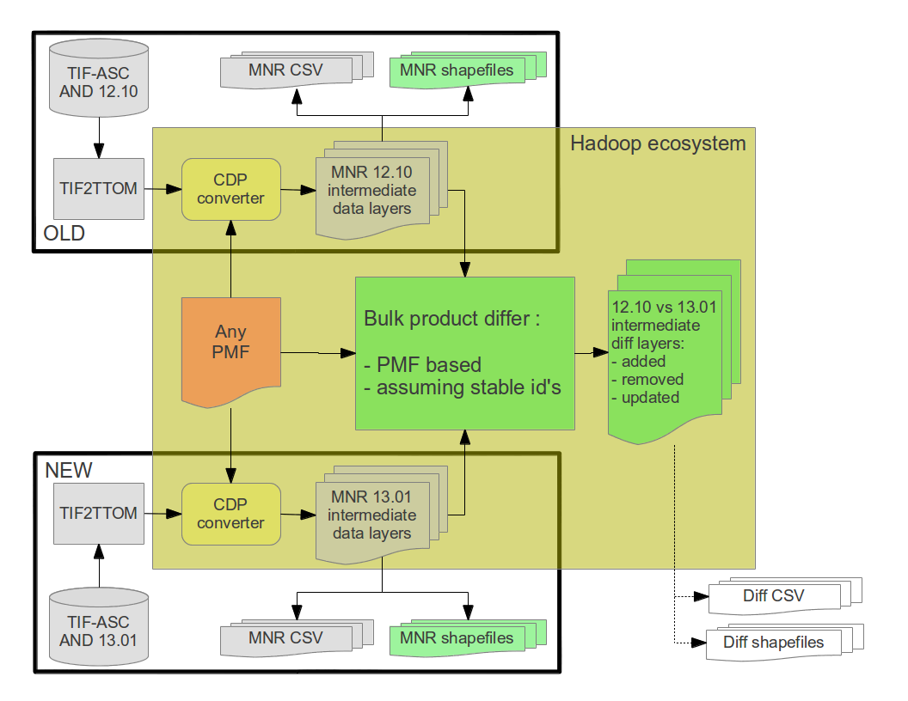
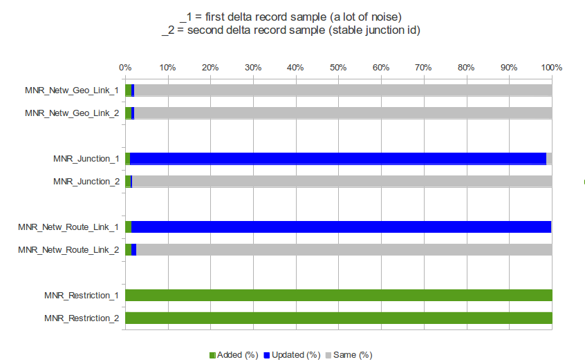
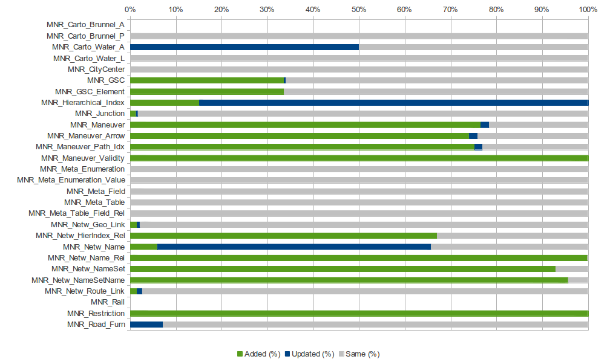

"Deliver MN-R prototype 4 to our customers"
Our product owner

Sprint overview - User stories
The sprint started on the 5th of March and ended on the 2nd of April 2013.
| Epic |
Story |
SP |
| MNR MAINT |
Package, document and release prototype 4 |
1 |
|
Rework and fix feedback from prototype 3 |
2 |
| MNR LAYER |
Populate Brunnels |
3 |
| MNR LAYER |
Add machine readable conceptual model (~allcodes) into meta info layer |
2 |
|
Implement new restrictions table model |
3 |
| MNR MACHSPEC |
Update pmf (physical model format) system to support type ranges |
3 |
|
Update & improve model tools |
1 |
| MNR RECUPD |
Proof of concept Stable (unique) ID's |
2 |
| MNR INFRA |
Set up and perfomance testing of development environment |
2 |
| MNR INFRA |
Make cross-team HM editing agreements and document |
3 |
| MNR INFRA |
Groom and prototype Hive (query possibility on Hadoop) |
3 |
| MNR INFRA |
Clean up and improve development process ease of use |
2 |
Product owner: Timothy Grymonpon
Scrum master: Timothy Grymonpon
Team: Christophe, Dominique, Jan, Jelle, Kevin, Pieter, Plamen, Rebekka
MNR MACHSPEC
Update pmf (physical model format) system to support type ranges
Support for value ranges in physical models was added. This allows to define an upper and lower range on a numeric field. e.g.
<valuerange name="Number Of Lanes">
<integer width="2"/>
<lowerbound>1</lowerbound>
<upperbound>99</upperbound>
</valuerange>
This entailed the following changes to our stack:
- Updated pmff.xsd to 1.4 (update the model.xml definition)
- Adapt modeltools to support value ranges, both in the model.xml and in dita.
- Updated sql scripts generation so our customers get these new constraints.
Benefits: Value ranges allow for more automated checks, and a more specific selection of datatypes in the target platform, e.g. select a byte iso an integer when the range is [0:255].
MNR MACHSPEC
Update pmf (physical model format) system to support type ranges
In database load scripts, these ranges are implemented as check constraints (where supported: on domains); this is also how we implemented enumerations. This example is Postgres specific.
CREATE DOMAIN "FRC" AS numeric(2) -- Discrete domain
CONSTRAINT "check_value_FRC"
CHECK (VALUE = ANY(ARRAY[10, 20, 30, 40, 51, 52, 60, 70, 80]));
CREATE DOMAIN "NumberOfLanes" AS numeric(2) -- Continuous domain [1, 99]
CONSTRAINT "check_value_NumberOfLanes"
CHECK ((VALUE >= 1) AND (VALUE <= 99));
CREATE DOMAIN "SpeedRestriction" AS numeric(3)
CONSTRAINT "check_value_SpeedRestriction"
CHECK ((VALUE >= 0) AND (VALUE <= 140));
CREATE TABLE "MNR_Netw_Route_Link" (
"FEAT_ID" uuid,
"NAME" varchar(254),
"LANG_CODE" varchar(3),
"DISPLAY_CLASS" "FRC",
"SPEEDMAX_POS" "SpeedRestriction", -- Domain reuse
"SPEEDMAX_NEG" "SpeedRestriction" -- Domain reuse
);
MNR MACHSPEC
Update pmf (physical model format) system to support type ranges
Small but interesting problem:
- Volkswagen test track Ehra-Lessien near Wolfsburg.
- Has a maximum speed on 250 km/h.
- Invalid according to the model ([0, 140]).
We are pretty strict on model violations: not valid means no product.
You may have seen this track here.

MNR MACHSPEC
Update & improve model tools
We have a list of improvement requests for the modeltools application, which is the application we use to convert the EA model into a machine readable physical model.
This sprint, we implemented some of those requests:
- Log version of modeltools so we can see which modeltools was used to generate a model.
- Log tables that are mising a primary key.
- Generated model will contain svn revision as stored in xmi, as buildnumber property on model.
- The model.xml file now contains ordered attributes, allowing for much better change detection in subversion.
MNR LAYER
Populate Meta Info layers
- The product specification and documentation is now a part of the product.
-
Small architectural challenge because this is a meta-layer.
-
Contains tables that describe and document:
- the other tables
- their fields
- and enumerations
-
UUIDs are stable.
-
More information here.
MNR INFRA
Groom and prototype Hive (query possibility on Hadoop)
Goal: feasability of using Hive to implement the MNR statistics layers.
What is Apache Hive?
- Initially developed at Facebook
- Convert SQL queries to MapReduce jobs
- Supports CSV, HBase, Avro, ...
- Has some unfortunate limitations and drawbacks
What did we try?
- Add basic support for Hive to our tools (ddl-generator)
- Query the MNR product (CSV)
- Run basic statistics queries
Challenges
- We don't output CSV, so we would need to query our intermediate files instead.
- Some queries may be impossible (spatial?).
- Needs to be done after the product was created.
MNR INFRA
Groom and prototype Hive (query possibility on Hadoop) - Demo

MNR LAYER
Populate Brunnels
- Required railways
- Area- and Point Brunnels (MNR_Carto_Brunnel_A & MNR_Carto_Brunnel_P)
- Grade Separated Crossing (MNR_GSC & MNR_GSC_Element)
Border Problem:
Incomplete MNR feature (GSC, Maneuver, ...) created,
if part of feature is not in the selected zone.

MNR LAYER
Implement new restrictions table model
-
Old Restrictions:
- 1 table with 56 columns
- most of the columns were not populated
-
New Restrictions:
- 3 tables: NetworkRestrictions, ManeuverValidity,
LaneInformation
- Reduced footprint

MNR RECUPD
Proof of concept Stable (unique) ID's - Differ process recap

MNR RECUPD
Proof of concept Stable (unique) ID's - Demo
MNR RECUPD
Proof of concept Stable (unique) ID's - Improvements since previous sprint

MNR RECUPD
Proof of concept Stable (unique) ID's - Overview of update noise

MNR RECUPD
Proof of concept Stable (unique) ID's - Next steps
- Stable junction id's have been introduced with hack in TIF2TTOM
- This was good enough to prove positive effect on record updates
- Now, we need to work on structural (DNA based) stable id solution usable for all possible features!
←→
/
#